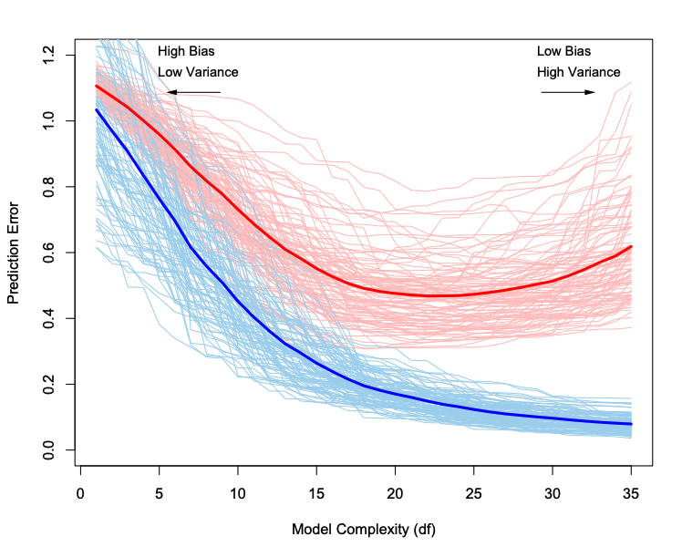

MA8701 Advanced methods in statistical inference and learning
L2: Classification and statistical decision theory, model selection and assessment
Course homepage: https://wiki.math.ntnu.no/ma8701/2023v/start
Plan
Continue with the decision theoretic framework from L1, but now for classification. Bias-variance trade-off.
- Classification - should not be new (ESL Ch 4.1-4.5, except 4.4.4)
- Statistical decision theoretic framework for classification (ESL 2.4)
- and the bias-variance trade-off (ESL 2.9 and 7.2-7.3)
Statistical decision theoretic framework
(ESL Ch 2.4)
is a mathematical framework for developing models \(f\) - and assessing optimality.
Last time, regression:
- \(X \in \Re^p\)
- \(Y \in \Re\)
- \(P(X,Y)\) joint distribution of covariates and respons
Aim: find a function \(f(X)\) for predicting \(Y\) from some inputs \(X\).
Ingredients: Loss function \(L(Y,f(X))\) - for penalizing errors in the prediction.
Criterion for choosing \(f\): Expected prediction error (EPE)
\[ \text{EPE}(f)=\text{E}_{X,Y}[L(Y,f(X))]=\int_{x,y}L(y,f(x))p(x,y)dxdy\] Choose \(f\) to minimize the \(\text{EPE}(f)\).
What changes do we need to do for classifiation?
Classification set-up
- \(X \in \Re^p\)
- \(G \in {\cal G}=\{1,\ldots,K\}\)
- \(\hat{G}(X) \in {\cal G}=\{1,\ldots,K\}\) (why \(f\) for regression and \(\hat{G}\) for classification? Why not \(g\) or \(h\)?)
- \(L(G,\hat{G}(X))\) is a \(K\times K\) matrix where \(K=\lvert G \rvert\), with elements \(l_{jk}\) giving the price to pay to misclassify an observation with true class \(g_j\) to class \(g_k\).
- Elements on the diagonal of \(L\) is 0, and off-diagonal elements are often \(1\).
We would like to find \(\hat{G}\) to minimize the EPE:
\[\text{EPE}=\text{E}_{G,X}[L(G,\hat{G}(X))]=\text{E}_X \text{E}_{G\mid X}[L(G,\hat{G}(X))]\] \[=\text{E}_X \{ \sum_{k=1}^K L(g_k,\hat{G}(X))P(G=g_k \mid X=x) \} \]
Also here it is sufficient to minimize the loss for each value of \(x\) (pointwise)
\[ \hat{G}=\text{argmin}_{g \in {\cal G}}\sum_{k=1}^K L(g_k,\hat{G}(X))P(G=g_k \mid X=x) \]
In the special case of 0-1 loss (off-diagonal elements in \(L\) equal to 1) then all \(k\) except the correct class gives loss \(1\) with probability \(P(G=g_k \mid X=x)\). Summing over the wrong classes gives the same as taking \(1\) minus the conditional probability of the correct class \(g\).
\[\hat{G}=\text{argmin}_{g \in {\cal G}} [1-P(G=g \mid X=x)]\]
\[=\text{argmax}_{g \in {\cal G}}P(G=g \mid X=x)\]
The Bayes classifier classifies to the most probable class using the conditional distribution \(P(G \mid X)\). The class boundaries are the Bayes decision boundaries and the error rate is the Bayes rate.
Group discussion
- What do we know about classification? (TMA4268 and TMA4315 mainly, or ESL ch 4.1-4.5, except 4.4.4)
Some possible variants: * What is the difference between discrimination and classification? * What are the sampling vs diagnostic paradigm? Which paradigm for \(k\)NN and LDA? * Parametric vs non-parametric methods?
- Logistic regression is by many seen as the “most important method in machine learning”. What do we remember about logistic regression?
Resources
(mostly what we learned in TMA4267, or ESL ch 4.1-4.5, except 4.4.4)
- From TMA4268: Overview and in particular Module 4: Classification and Module 2: Statistical learning
- From TMA4315: Overview and in particular Module 3: Binary regression and for more than two classes: Module 6: Categorical regression.
Model assessment and selection
(ESL Ch 7.1-7.6,7.10-7.12)
We use a training set to estimate \(\hat{f}\).
The generalization performance of \(\hat{f}\) can be evaluated from the EPE (expected prediction error) on an independent data set
We use this for
- Model assessment: evaluate the performance of a selected model
- Model selection: select the best model for a specific task - among a set of models
If we are in a data rich situation we “just” divide our data into three parts, and use
- one for training
- one for validation (model selection)
- one for testing (model assessment)
A typical split might be 50-60% training and 20-25% validation and test, but this depends on the complexity of the model to be fitted and the signal-to-noise ratio in the data.
The focus in Ch 7 of ESL is to present methods to be used in the situations where we do not have enough data to rely on the training-validation-testing split.
And, even if we have enough data - what we now will learn will give us insight into much used methods for model assessment and model selection!
Plan
Look at \(\text{EPE}(x_0)\) (now called Err(\(x_0\)) after we have estimated \(f\)) and how model complexity can be broken down into irreducible error, squared bias and variance (should be known from before)
Study EPE (Err) unconditional and conditional on the training set
Study optimism of the training error rate, and how in-sample error may shed light
Cross-validation and .632 bootstrap estimates of EPE
How will we build on this in Parts 2-4?
The bias-variance trade-off
(ESL p26 and 7.3)
Assume: \[ Y=f(X)+\varepsilon\] where \(\text{E}(\varepsilon)=0\) and \(\text{Var}(\varepsilon)=\sigma_{\varepsilon}^2\).
For the bias-variance decomposition we only consider the squared loss. Why?
In Ch 7 we use the notation Err instead of EPE (expected prediction error) that we used in Ch 2, and now we have estimated \(f\) by \(\hat{f}\).
Let \(\text{Err}(x_0)\) be the expected prediction error of a regression fit \(\hat{f}(X)\) at a (new) input value \(X=x_0\). As in Ch 2 the expected value is over \((X,Y)\) for Err, and we may look at \[ \text{Err}=E_{x_0} \text{Err}(x_0)\] How can we partition \(\text{Err}(x_0)\) into different sources?
\[ \text{Err}(x_0)=\text{E}[(Y-\hat{f}(x_0))^2 \mid X=x_0]=\sigma_{\varepsilon}^2 + \text{Var}[\hat{f}(x_0)]+[\text{Bias}(\hat{f}(x_0))]^2\]
- First term: irreducible error, \(\text{Var}(\varepsilon)=\sigma^2\) and is always present unless we have measurements without error. This term cannot be reduced regardless how well our statistical model fits the data.
- Second term: variance of the prediction at \(x_0\) or the expected deviation around the mean at \(x_0\). If the variance is high, there is large uncertainty associated with the prediction.
- Third term: squared bias. The bias gives an estimate of how much the prediction differs from the true mean. If the bias is low the model gives a prediction which is close to the true value.
Derivation
If you need to refresh your memory of the bias-variance trade-off, you might also look at the exam Problem 2 TMA4268 2018 exam with solutions
Also: TMA4268 and in particular Module 2
The following is a derivation:
\[\begin{align*} \text{Err}(x_0)&=\text{E}[(Y-\hat{f}(x_0))^2 \mid X=x_0]\\ &=\text{E}[Y^2 + \hat{f}(x_0)^2 - 2 Y \hat{f}(x_0)\mid X=x_0] \\ &= \text{E}[Y^2\mid X=x_0] + \text{E}[\hat{f}(x_0)^2\mid X=x_0] - \text{E}[2Y \hat{f}(x_0)\mid X=x_0]\\ &= \text{Var}[Y\mid X=x_0] + \text{E}[Y\mid X=x_0]^2 + \text{Var}[\hat{f}(x_0)\mid X=x_0] + \text{E}[\hat{f}(x_0)\mid X=x_0]^2 - 2 \text{E}[Y\mid X=x_0]\text{E}[\hat{f}(x_0)\mid X=x_0] \\ &= \text{Var}[Y\mid X=x_0]+f(x_0)^2+\text{Var}[\hat{f}(x_0)\mid X=x_0]+\text{E}[\hat{f}(x_0)\mid X=x_0]^2-2f(x_0)\text{E}[\hat{f}(x_0)\mid X=x_0]\\ &= \text{Var}[Y\mid X=x_0]+\text{Var}[\hat{f}(x_0)\mid X=x_0]+(f(x_0)-\text{E}[\hat{f}(x_0)\mid X=x_0])^2\\ &= \text{Var}(\varepsilon\mid X=x_0) + \text{Var}[\hat{f}(x_0)\mid X=x_0]+[\text{Bias}(\hat{f}(x_0))\mid X=x_0]^2 \end{align*}\]
(For some applications also the training Xs are fixed.) See the exercises below to study the results for \(k\)NN and OLS.
Expected prediction error
(ESL 7.2 and 7.4, and we are now back to a general loss function - but first have regression in mind)
If we now keep the training set fixed (we would do that in practice - since we often only have one training set):
\[ \text{Err}_{\cal T}=\text{E}[L(Y,\hat{f}(X))\mid {\cal T}]\]
as before the expected value is with respect to \((X,Y)\), but the training set is fixed - so that this is the test set error is for this specific training set \({\cal T}\).
Getting back to the unconditional version, we take expected value over ALL that is random - including the training set \[ \text{Err}=\text{E}(\text{E}[L(Y,\hat{f}(X))\mid {\cal T}])=\text{E}_{\cal T} [\text{Err}_{\cal T}]\]
We want to estimate \(\text{Err}_{\cal T}\), but we will soon see that it turns out that most methods estimate \(\text{Err}\).
Training error
(also referred to as apparent error)
For a regression problem: The training error is the average loss over the training sample: \[\overline{\text{err}}=\frac{1}{N} \sum_{i=1}^N L(y_i,\hat{f}(x_i))\]
Group discussion
Look at Figure 7.1 (with figure caption) on page 220 in the ESL book. The text reads that “100 simulated training sets of size 50” and that “lasso produced sequence of fits”.
Explain what you see - in particular what are the red and blue lines and the bold lines. What can you conclude from the figure?
- Red lines
- Bold red line
- Blue lines
- Bold blue line

Conclusion
(from Figure 7.1)
The training error \(\overline{\text{err}}\) is not a good estimate for the \(\text{Err}_{\cal T}\) nor the \(\text{Err}\).
Loss function and training error for classification
- \(X \in \Re^p\)
- \(G \in {\cal G}=\{1,\ldots,K\}\)
- \(\hat{G}(X) \in {\cal G}=\{1,\ldots,K\}\)
0-1 loss with \(\hat{G}(X)=\text{argmax}_k \hat{p}_k(X)\) \[L(G,\hat{G}(X))=I(G\neq \hat{G}(X))\] \(-2\)-loglikelihood loss (why \(-2\)?): \[ L(G,\hat{p}(X))=-2 \text{log} \hat{p}_G(X)\]
Test error (only replace \(\hat{f}\) with \(\hat{G}\)): \[ \text{Err}_{\cal T}=\text{E}[L(Y,\hat{G}(X))\mid {\cal T}]\] \[ \text{Err}=\text{E}[\text{E}[L(Y,\hat{G}(X))\mid {\cal T}]]=\text{E} [\text{Err}_{\cal T}]\]
Training error (for 0-1 loss) \[\overline{\text{err}}=\frac{1}{N}\sum_{i=1}^N I(g_i\neq \hat{g}(x_i))\] Training error (for \(-2\)loglikelihood loss) \[\overline{\text{err}}=-\frac{2}{N}\sum_{i=1}^N \text{log}\hat{p}_{g_i}(x_i)\]
Discussion and conclusions
- What are key take home messages from today´s teaching session?
- What do you plan to do before the next teaching session?
- Feedback on today´s teaching session?
Exercises
What are the most important results from the “Statistical decision theoretic framework”?
- What are results to remember for regression and for classification?
- How would you use these results?
Look into the derivation for the bias and variance
(no solutions posted)
- for \(k\)NN in Equation 7.10 and
- OLS in Equation 7.11 on pages 222-223 of ESL.
Key results from logistic regression
a) What are the three components of a generalized linear model?
b) What are these three for a logistic regression?
c) Parameter estimation
How are regression parameters estimated for the GLM, and for logistic regression in particular?
Does it matter if you use the observed or expected information matrix for logistic regression?
d) Asymptotic distribution
What is the asymptotic distribution of the estimator for the regression parameter \(\hat{\beta}\)? How can that be used to construct confidence intervals or perform hypothesis tests?
e) Deviance
How is the deviance defined in general, and how is this done for the logistic regression?
Solutions to exercises
Please try yourself first, or take a small peek - and try some more - before fully reading the solutions. Report errors or improvements to Mette.Langaas@ntnu.no.
Key results from logistic regression
a) What are the three components of a generalized linear model?
b) What are these three for a logistic regression?
c) Parameter estimation
d) Asymptotic distribution
e) Deviance
Reference links
ESL official errata: and choose “Errata” in the left menu